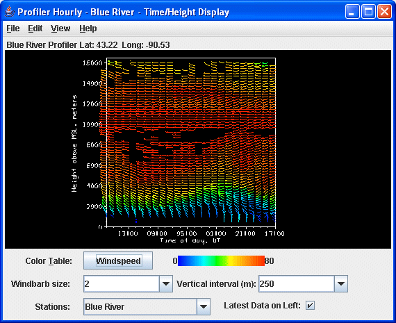

Overview
The Profiler Time/Height display shows winds at all levels above one station,
for one or more times. Winds are shown with the meteorological wind barb symbol.
The location of the barb on the plot shows wind observation height above mean
sea level; the barb's orientation gives wind direction on a map view.

Image 1: Time/Height Display
The map position of the vertical profile is indicated by the "Lat: Long:" readout
above the graph. The time and height values on the plot can be sampled by dragging
the middle mouse button over the plot.
Properties
- Color Table - Shows the active color table and the associated
high and low data values in the units the display is made in. As the mouse
pointer is moved over the color bar, the value at a particular color is
shown. Right click on the color bar or click on the button that displays the name of the Color Table to make modifications to the color bar. This allows you to open the Color
Table Editor, change the range, select other color tables, etc.
- Windbarb size - Enlarges or
reduces the wind barbs.
- Vertical interval - Changes
the vertical separation between wind barbs.
- Stations - Switches between the station being displayed if more than one station was selected.
- Latest data on left - Changes the order of
times displayed. When checked, the most recent data time is on the left;
and the oldest on the right.